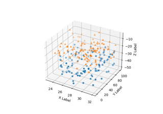
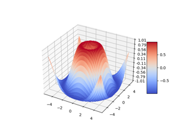
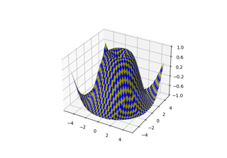
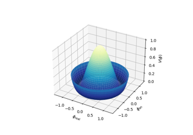
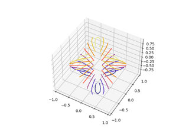

3D plotting#


Create 2D bar graphs in different planes
Create 2D bar graphs in different planes
3D box surface plot


Plot contour (level) curves in 3D using the extend3d option
Plot contour (level) curves in 3D using the extend3d option


Project filled contour onto a graph
Project filled contour onto a graph


Create 3D histogram of 2D data
Create 3D histogram of 2D data


3D plot projection types



3D scatterplot



3D surface (colormap)
3D surface (solid color)

3D surface (checkerboard)

3D surface with polar coordinates
3D surface with polar coordinates


Triangular 3D contour plot

Triangular 3D surfaces


3D voxel plot of the NumPy logo
3D voxel plot of the NumPy logo

3D voxel / volumetric plot with cylindrical coordinates
3D voxel / volumetric plot with cylindrical coordinates